Chapter 1 Geographic Information
1.1 Learning outcomes
By the end of this practical you should be able to:
- Describe and explain GIS data formats and databases
- Source and pre-process spatial data
- Load and undertaken some basic manipulation of spatial data in QGIS and R
- Evaluate the (dis)advantages of each GIS you have used
1.2 Homework
Outside of our scheduled sessions you should be doing around 12 hours of extra study per week. Feel free to follow your own GIS interests, but good places to start include the following:
Exam
Each week we will provide a short task to test your knowledge, these should be used to guide your study for the final exam.
The task is to join some non spatial data to some spatial data.
Go to the New Zealand spatial data portal and download the file Territorial Authority 2018 (generalised), these are city or district councils. Make sure it’s the Territorial Authority 2018 data not SA1.
Go to the Stats NZ website and download the Statistical area 1 dataset for 2018 for the whole of New Zealand. Download the excel file this week, not the
.csv.Unzip the downloaded census file and open 2018-SA1-dataset-individual-part-3a-total-NZ_updated_16-7-20, you will see a tab for Territorial authority. Join the 2018 paid employee field to the spatial data and make a basic map. Hint, you may need to make a new
.csvfile from the data.
Reading
Each week i’ll provide a core chapter to support the skills taught here. However, you are free to read whatever interests you and Adam and I strongly encourage this, so please don’t be constrained to this recommendation. Consult the reading list, practical and lecture each week for more ideas.
This week:
GIS and Cartography by Goodchild (2009)
Chapter 2 “Geographic data in R” from Geocomputation with R by Lovelace, Nowosad and Muenchow (2020).
Opening practice: supporting reproducibility and critical spatial data science by Brunsdon and Comber (2020)
Watching
- What is Spatial Data Science from some of our friends at CARTO
1.3 Recommended listening 🎧
Some of these practicals are long, take regular breaks and have a listen to some of our fav tunes each week.
Andy. Week 1. No other choice than Vampire Weekend. The band formed during college (University in the USA) and produced their first album of their own whilst working full time jobs! Incredible. The lead vocalist and guitarist Ezra Koenig was a school teacher in Brooklyn, New York. I’ve seen them a few times at Glastonbury and in London during which they gave the people what they wanted and took requests from their entire catalogue, really amazing musicians. Note some of the guest appearances in this album as they also might make an apperance later in the term!
Adam OK, it’s week 1, so I’m going in HARD. This week it’s the raver’s raver, the DJ’s DJ. This man is a style icon and so drum & bass it hurts - it’s Voltage! Here he is with his new album, Balance Over Symmetry. This will surprise a lot of people as it’s an eclectic mix of DnB bangers through to some Burial-inspired minimal dubstep. Follow him on Instagram and get your ears around his brilliant.
1.4 Data
The volume of geographic information which is freely available for use in the UK is increasing exponentially and spatially referenced data can often be found in many different places. In this practical we’re going to use data from the London data store — a free and open data-sharing portal provided by the Greater London Authority (GLA), also known as City Hall that is the devolved regional governance body of London.
We are going to get spatial data of the London boroughs and join flytipping (the illegal deposit of waste, commonly on road verges) data that is provided as a .csv file. .csv stands for comma-separated values (CSV) — it uses a comma to separate each value.
At the end of this document I’ll also run through some common sources of data that will stand you in good stead (be advantageous) for the rest of the course.
1.4.1 File paths
On your computer create a new folder called GIS and within this a sub folder called wk1. It is up to you how you organise your files. Make sure you change the file paths where appropriate to your own.
1.4.2 Data download
Firstly we need to get a spatial outline of the London boroughs. The geographic boundaries that are used in the UK are a complex, often inter-related, but ever changing mass of areas. For anyone new to the UK (or indeed not a trained quantitative geographer), it can be quite a daunting task to attempt to understand all of the boundaries that are in use. Fortunately the Office for National Statistics (ONS) has an online beginners guide to UK geography. If you need more information on the vast array of different UK geographies, go and explore these resources:
Another easy to read guide on census / administrative geography was produced by the London Borough of Tower Hamlets - skip to page 2 for a visual summary
Let’s download some data..
- Spatial Data
To get the data go to the London data store
Search for Statistical GIS Boundary Files for London
Download the statistical-gis-boundaries-london.zip
Unzip the data and save it to your wk1 folder.
- CSV data
On the same website search for fly-tipping incidents
Download the
.csvfile
1.4.3 Data pre-processing
Question Open the .csv in Excel, what do you notice about how the data is stored?
Answer The year is a column and for each area the values are repeated for different years. In our analysis it is easier to have the different years as a column and populated for each area. So, we want to go from this…
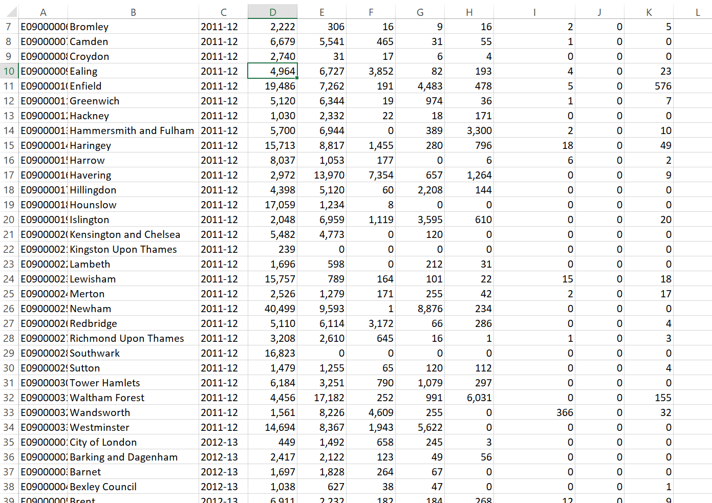
To this…
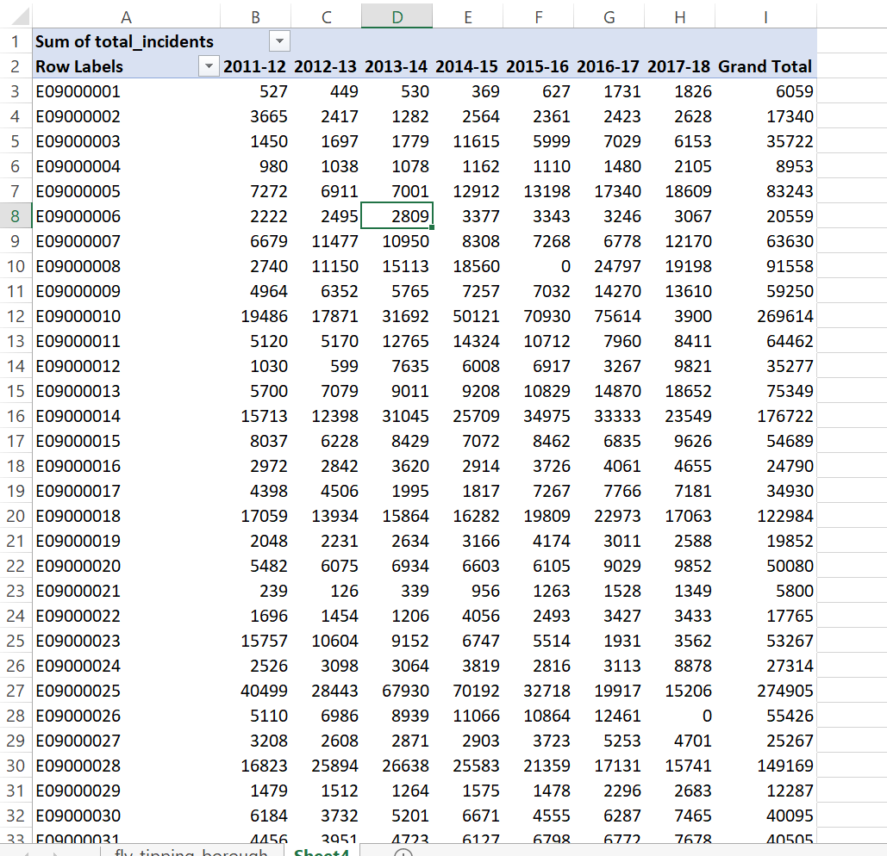
In previous years there have errors in this .csv, for example there used to be year value of 2017-2018 that was incorrect. Whilst these have been resolved, it’s always important to check your data.
As we are going to use this dataset in QGIS and R I’ve done it in Excel using a pivot table. In future we’ll use R to automate tasks like this.
Go to Insert > PivotTable
Select the original table and create a PivotTable in a new worksheet
The PivotTable Field box will appear, experiment with the different fields in each of the areas
I’ve used the following:
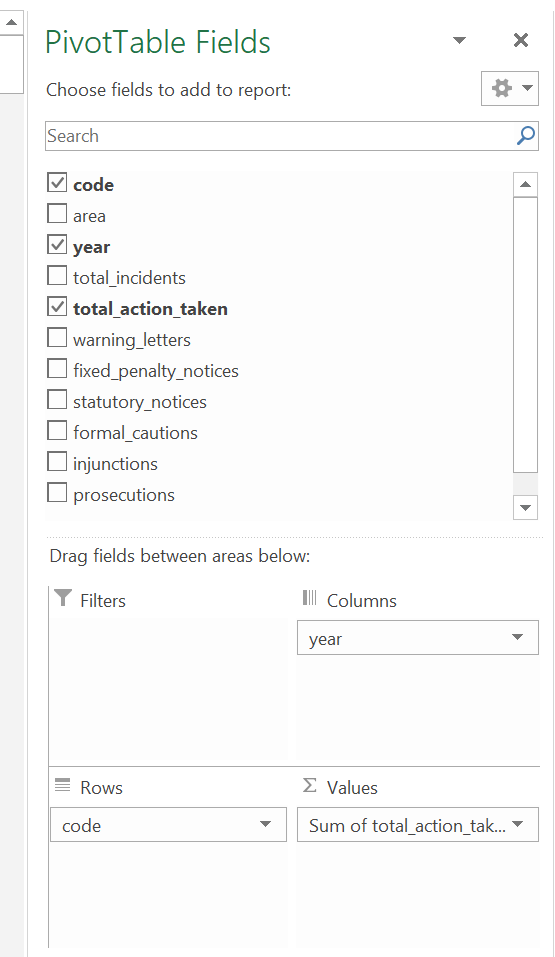
Note how I’ve altered the total_action_taken to the sum of… as the original was displaying incorrectly, to do so:
- Click on drop down button for total_action_taken > Value Field Settings > select Sum
It’s important to think about what data we actually need in the next step and it’s good practice to avoid data redundancy where possible.
Spoiler The spatial data we have downloaded already contains borough name, so we don’t need it twice. However, we do need a field to link the two datasets on. You could use borough name, but when using text fields sometimes input variations can affect joins. For example, if you had the University of Manchester in one dataset and Manchester University in another the join would fail. Consequently it’s usually best to join datasets on a column that has a code or number.
Now save the Excel sheet that contains the pivot table as a new .csv. Make sure that the first row of data holds the column titles. Remove all empty rows.
When saving the file also avoid any special characters (e.g. -) and spaces, use an underscore instead of spaces.
Warning Spatial software does not like file names with spaces or special characters.
Now it’s time to load, inspect and do some basic manipulation of this data. As mentioned in the lecture there are several GIS software ‘types’, Andy will demonstrate QGIS but your practical will focus on R.
1.5 R
Warning This week is just about getting started, we want to load spatial data, join some non spatial to it and make a map. There will be some aspects we don’t cover in detail, please just accept that for this week. Next week we have a deep dive into R.
1.5.1 Introduction
R is both a programming language and software environment, originally designed for statistical computing and graphics. R’s great strength is that it is open-source, can be used on any computer operating system and free for anyone to use and contribute to. Because of this, it is rapidly becoming the statistical language of choice for many academics and has a huge user community with people constantly contributing new packages to carry out all manner of statistical, graphical and importantly for us, geographical tasks.
The purpose of this practical is just to demonstrate data loading and manipulation in different software. The next practical will provide much more detail on R, so don’t worry about that.
1.5.2 R and RStudio
When you download and install R, you get the R Graphical User Interface (GUI) as standard (below). This is fine and some purists prefer using the clean, unfussy command-line original, but it has some limitations such as no graphical way to view data tables or keep track of what is in your working directory (there are a number of others too).
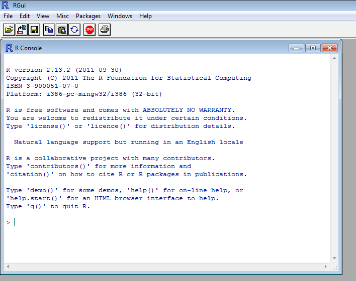
Fortunately there are a number of software environments that have been developed for R to make it a little more user-friendly; the best of these by a long way is RStudio. RStudio can be downloaded for free from https://www.rstudio.com/. We covered the RStudio layout last week.
1.5.3 Getting started
If you are some kind of masochist, you are welcome to use the bundled R GUI for all of your work. If pain is not your thing, then for this practical (and future practicals) I will assume that you are using RStudio.
- From the start menu on your computer, find and run RStudio
You should be able to see these quadrants (without the code):
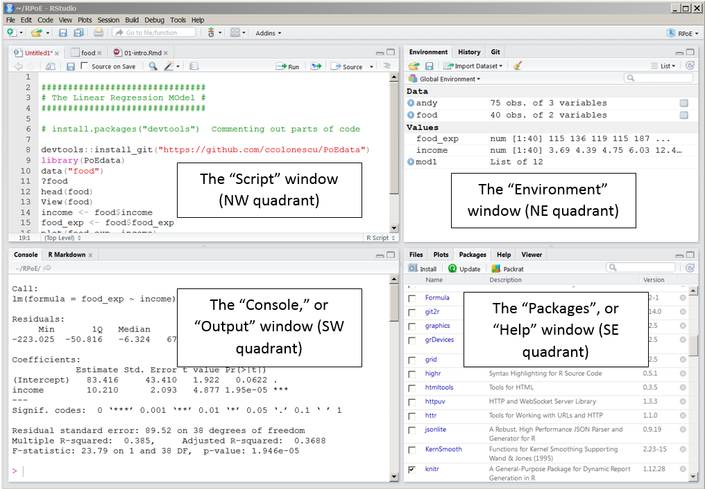
Once RStudio has opened, the first thing we will do is create a new project – projects enable you to organise your work effectively and store all of the files for a particular task/project.
To create a new project (and this will vary a little depending on the version of RStudio you are using) select File > New Project
Select Start a project in a brand new working directory and create a new project in a directory called “GIS” or “CASA0005”. As we will see, you can use one project for the whole module. Each practical can be a new script, with data stored in related folders (e.g. week1data)
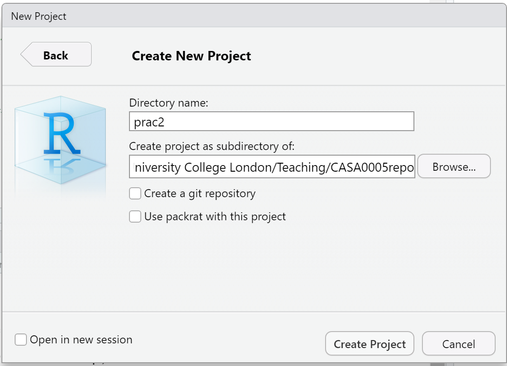
Once we’ve made an RProject:
- In the top right of Rstudio (above the environment window) you will see your Project name next to a blue box with R
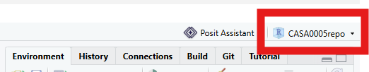
In the file window (bottom right) you will see:
- The full file path name of the project folder, this is the folder that contains the project file (green circle)
- The “Project file” ending .RProj (blue circle)
- The blue square with the R logo (red cirlce), clicking this will always return you to the project folder
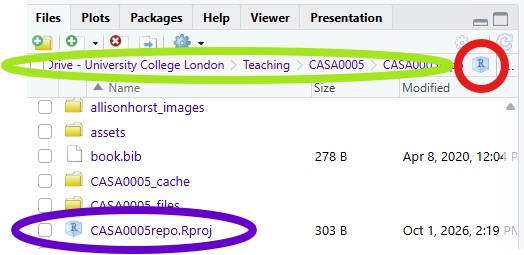
1.5.4 Files in R
We need to understand the different types of files we can use in R and where we can input code:
- The console - you can write code here, but it is one use only and the code itself won’t be saved, you’ll have to type it again
- A script - a traditional file of code, but the entire script must be run each time
- An RMarkdown or Quarto file - allows us to write text and have code in chunks, each chunk can be run individually or all together. Perfect! You can output to any format - HTML, PDF and word.
All of these files will appear in the “script” window.
Today we will use an RMardown File. Go File > New File > R Markdown. This will load an example file and you should be able to see the different areas for text and code. Code is held within “code chunks” and this is where we will put our code. You will notice each “chunk” has a play button and a “run all chunks above button”.
Make sure you save the file in your project folder.
1.5.5 Packages in R
R works on packages that are collections of functions and data. Packages are bits of code that extend R beyond the basic statistical functionality it was originally designed for. For spatial data, they enable R to process spatial data formats, carry out analysis tasks and create some of the maps that follow. Most packages are easily recognisable through a hexagon (hex) logo, or sticker.
Figure 1.1: R package hex sticker wall. Source: Mitchell O’Hara-Wild arranging Hex stickers in R
Basically, without packages, R would be very limited. With packages, you can do virtually anything! One of the issues you will come across is that packages are being continually developed and updated and unless you keep your version of R updated and your packages updated, there may be some functions and options not available to you.
For this practical we will need the ones listed in the code chunk below. Whilst we’ve installed them (with the code below), we haven’t yet loaded them. It’s best practice to do all this at the start of your code, however, for demonstration purposes I’ll load each one as we need it. You can put this into a code chunk and press play (right hand side of the code chunk) - the packages should install. You only need to install a package once. After they are installed you never need to run this again.
install.packages(c("sf", "tmap", "tmaptools", "RSQLite", "tidyverse"),
repos = "https://www.stats.bris.ac.uk/R/")- We can also install and load packages through RStudio packages tab. If you can see the package listed in the package tab it is installed and a tick means it is loaded.
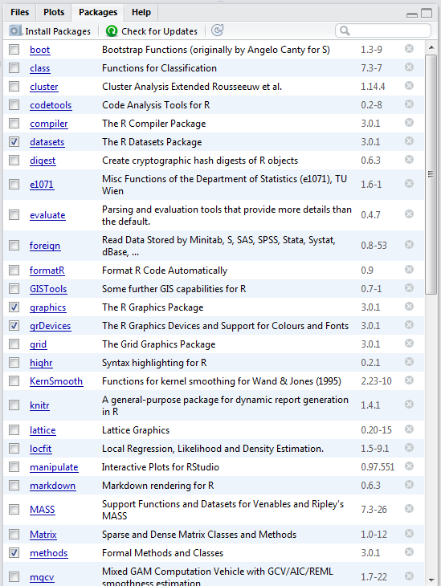
Packages we’ve installed with our code:
sf: simple features, standard way to load spatial vector datatmap: layer-based and easy approach to make thematic (theme based) mapstmaptools: set of tools for reading and processing spatial dataRSQLite: embeds the SQLite database engine in R
Here, repos stands for repository where we will download the packages from. Once you have set it, you shouldn’t need to specify it again. Whilst we’ve installed the packages we haven’t loaded them…this is done through using library() function.
Figure 1.2: Installing vs loading (with library) packages. Source: Dianne Cook
1.5.6 Why use a project and markdown
Setting up a project and using Rmarkdown (or Quarto) is extremely useful as it lets you easily access (and share) your data and files…for example….today we will be using a flytipping .csv. It is stored at the full file path that we can load directly. The tidyverse package is actually a collection of packages, to read a .csv we need the readr package (part of tidyverse) and the read_csv function.
library(tidyverse)
mycsv <- read_csv("C:/Users/Andy/OneDrive - University College London/Teaching/CASA0005/2020_2021/CASA0005repo/Prac1_data/fly_tipping_borough_edit.csv"") However, never do this! Imagine sharing that with someone else, they’d had to change every file path! As i’ve set my R project up in the CASA0005repo folder with different data folders for each week i can just use:
## Rows: 34 Columns: 9
## ── Column specification ──────────
## Delimiter: ","
## chr (1): Row Labels
## dbl (8): 2011_12, 2012_13, 2013_14, 2014_15, 2015_16, 2016_17, 2017_18, Gran...
##
## ℹ Use `spec()` to retrieve the full column specification for this data.
## ℹ Specify the column types or set `show_col_types = FALSE` to quiet this message.If i had the .csv file in the same folder as my project file i could just use
You can run put this into a code chunk and press play, the data will load. If you look in the envrionment tab (top right) you will see it as an “object”. Click it and it will display like an excel sheet in R.
When you load tidyverse you might get a list of conflicts, this basically means that several packages have functions named the same thing. For example there is a function named filter() in the packages dplyr and stats. If you wanted to use the dplyr version you would use dplyr::filter() or for the stats version it would be stats::filter()…
Note Your .csv might have a extra header present (a row before Row Labels). You can either: (a) stop and go and delete this in the .csv now and reload it or (b) change the code to… mycsv <- read_csv("prac1_data/fly_tipping_borough_edit.csv", skip = 1)
I’d strongly recommend you think about how you will store data within your project. Is it sensible to just dump all your data into the project folder or perhaps create a new folder (either in R) or how you would normally do so in Windows / OS X and keep your raw data in that folder…like i have done…Here you can see that i’m in my project folder (red box on the right) and i’ve made new folders for all my data (each practical here) and images that are shown throuhgout….nice and organised!
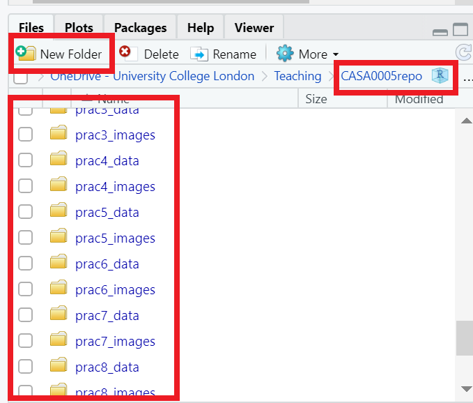
1.5.7 Load data
Load the sf package so we can read our shapefile in — your data should be in your project.
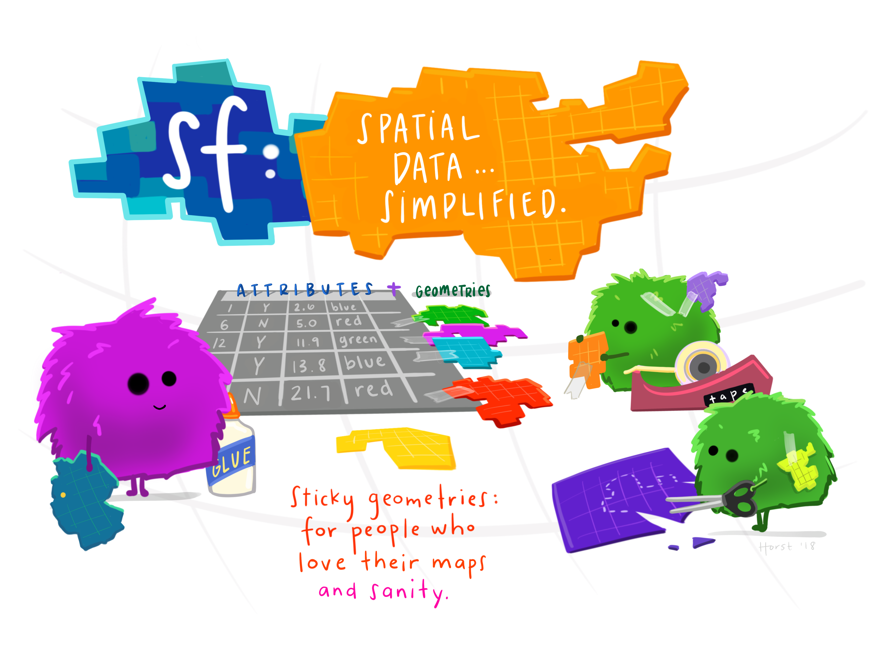
Figure 1.3: sf introduction graphic. Source: Allison Horst data science and stats illustrations
library(sf)
# my data is within a prac1_data folder.
shape <- st_read("prac1_data/statistical-gis-boundaries-london/ESRI/London_Borough_Excluding_MHW.shp")## Reading layer `London_Borough_Excluding_MHW' from data source
## `C:\Users\Andy\OneDrive - University College London\Teaching\CASA0005\CASA0005repo\prac1_data\statistical-gis-boundaries-london\ESRI\London_Borough_Excluding_MHW.shp'
## using driver `ESRI Shapefile'
## Simple feature collection with 33 features and 8 fields
## Geometry type: MULTIPOLYGON
## Dimension: XY
## Bounding box: xmin: 503568.2 ymin: 155850.8 xmax: 561957.5 ymax: 200933.9
## Projected CRS: OSGB36 / British National GridNote if my data was in the same folder as my project file (.RProj) i would just need.
To get a summary of the data held within the shapefile data (attribute table) enter the following:
## NAME GSS_CODE HECTARES NONLD_AREA
## Length:33 Length:33 Min. : 314.9 Min. : 0.00
## Class :character Class :character 1st Qu.: 2724.9 1st Qu.: 0.00
## Mode :character Mode :character Median : 3857.8 Median : 2.30
## Mean : 4832.4 Mean : 64.22
## 3rd Qu.: 5658.5 3rd Qu.: 95.60
## Max. :15013.5 Max. :370.62
## ONS_INNER SUB_2009 SUB_2006 numeruc
## Length:33 Length:33 Length:33 Min. : 3
## Class :character Class :character Class :character 1st Qu.: 1443
## Mode :character Mode :character Mode :character Median : 3615
## Mean : 5038
## 3rd Qu.: 7231
## Max. :17036
## geometry
## MULTIPOLYGON :33
## epsg:NA : 0
## +proj=tmer...: 0
##
##
## To have a quick look what the shapefile looks like enter the following:

That plots everything in the shapefile (all the attributes) if you just wanted the geometry (outline of the shape) you could use…
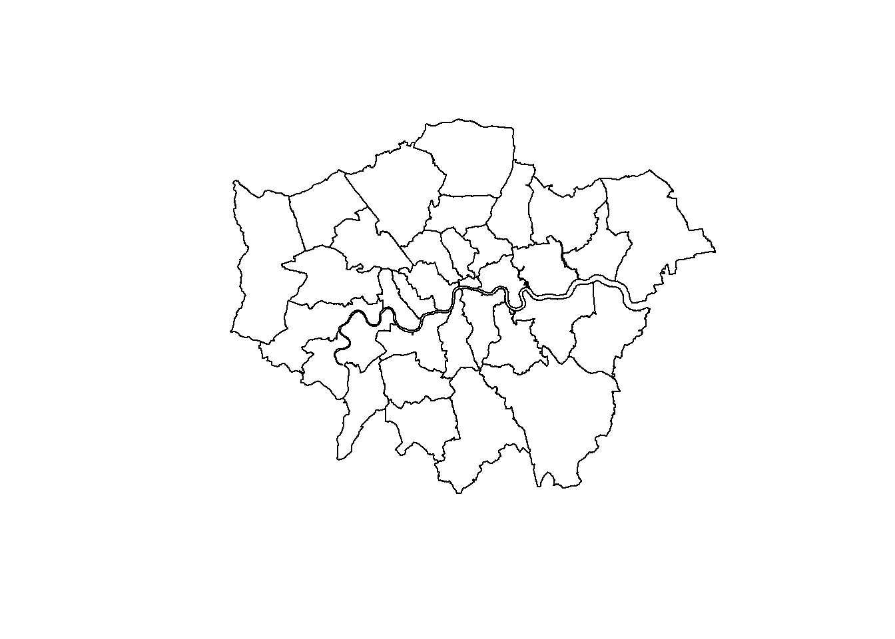
When you load tidyverse you might get a list of conflicts, this basically means that several packages have functions named the same thing. For example there is a function named filter() in the packages dplyr and stats. If you wanted to use the dplyr version you would use dplyr::filter() or for the stats version it would be stats::filter()…
Note Your .csv might have a extra header present (a row before Row Labels). You can either: (a) stop and go and delete this in the .csv now and reload it or (b) change the code to… mycsv <- read_csv("prac1_data/fly_tipping_borough_edit.csv", skip = 1)
To view the .csveither click on it in the envrionment tab (top right) or run the following, try this in the console:
## # A tibble: 34 × 9
## `Row Labels` `2011_12` `2012_13` `2013_14` `2014_15` `2015_16` `2016_17`
## <chr> <dbl> <dbl> <dbl> <dbl> <dbl> <dbl>
## 1 E09000001 563 1492 433 347 587 1944
## 2 E09000002 2687 2122 1399 3100 2672 1130
## 3 E09000003 2356 1828 890 219 615 130
## 4 E09000004 505 627 732 399 262 439
## 5 E09000005 6713 2232 3189 3926 3980 4366
## 6 E09000006 306 479 653 462 326 228
## 7 E09000007 5541 5962 8281 4837 4719 4656
## 8 E09000008 31 108 460 712 1707 637
## 9 E09000009 6727 5679 6543 5521 6067 12688
## 10 E09000010 7262 3595 3269 4937 5292 10894
## # ℹ 24 more rows
## # ℹ 2 more variables: `2017_18` <dbl>, Grand_Total <dbl>1.5.8 Join data
In R we’ve given our London boroughs shapefile the name shape and our flytipping .csv the name mycsv. If you look in the Environment quadrant you should see them both listed.
Join the .csv to the shapefile. Here, replace Row Labels with whatever your GSS_CODE is called in the .csv:
Let’s break this down a bit. We just created a tibble of mycsv (this is a new form of a dataframe) where each column has a variable and each row contains a set of values — so basically a normal table. We did this simply by using read_csv() to read the data in. We then matched our csv to our shape based on the GSS_CODE values in both.
Check the merge was successful, this is just going to show the top 10 rows:
## Simple feature collection with 10 features and 8 fields
## Geometry type: MULTIPOLYGON
## Dimension: XY
## Bounding box: xmin: 503568.2 ymin: 155850.8 xmax: 561957.5 ymax: 198355.2
## Projected CRS: OSGB36 / British National Grid
## NAME GSS_CODE HECTARES NONLD_AREA ONS_INNER SUB_2009
## 1 Kingston upon Thames E09000021 3726.117 0.000 F <NA>
## 2 Croydon E09000008 8649.441 0.000 F <NA>
## 3 Bromley E09000006 15013.487 0.000 F <NA>
## 4 Hounslow E09000018 5658.541 60.755 F <NA>
## 5 Ealing E09000009 5554.428 0.000 F <NA>
## 6 Havering E09000016 11445.735 210.763 F <NA>
## 7 Hillingdon E09000017 11570.063 0.000 F <NA>
## 8 Harrow E09000015 5046.330 0.000 F <NA>
## 9 Brent E09000005 4323.270 0.000 F <NA>
## 10 Barnet E09000003 8674.837 0.000 F <NA>
## SUB_2006 numeruc geometry
## 1 <NA> 3 MULTIPOLYGON (((516401.6 16...
## 2 <NA> 2684 MULTIPOLYGON (((535009.2 15...
## 3 <NA> 258 MULTIPOLYGON (((540373.6 15...
## 4 <NA> 4334 MULTIPOLYGON (((521975.8 17...
## 5 <NA> 5471 MULTIPOLYGON (((510253.5 18...
## 6 <NA> 10463 MULTIPOLYGON (((549893.9 18...
## 7 <NA> 4393 MULTIPOLYGON (((510599.8 19...
## 8 <NA> 1622 MULTIPOLYGON (((510599.8 19...
## 9 <NA> 7483 MULTIPOLYGON (((525201 1825...
## 10 <NA> 503 MULTIPOLYGON (((524579.9 19...Now, let’s make a quick thematic map (or a qtm) using the package tmap. I’ve made mine for flytipping between 2011 and 2012 (column 2011_12). But check what your column name is from the above code head(shape, n=10) it might be slightly different like 2011-2012 or x2011_2012….
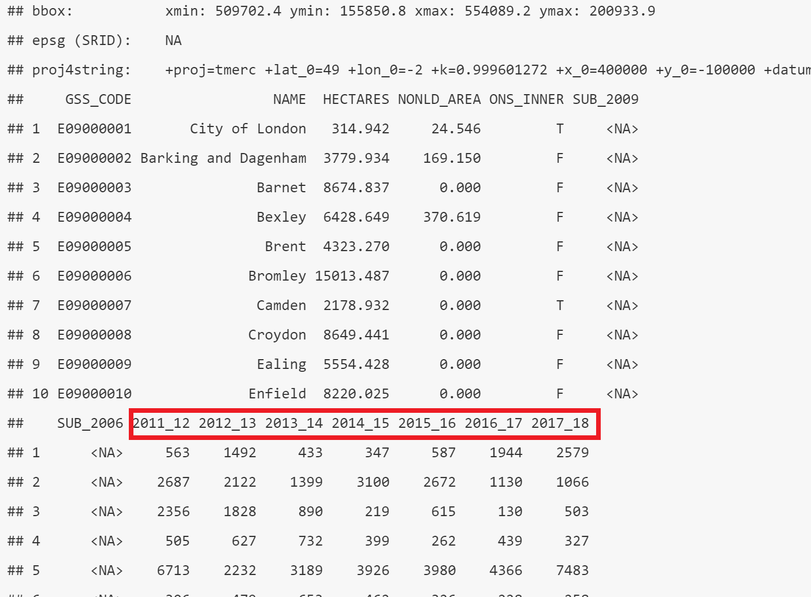
## Warning: package 'tmap' was built under R version 4.5.3tmap_mode("plot")
# change the fill to your column name if different
shape2 %>%
qtm(.,fill = "2011_12")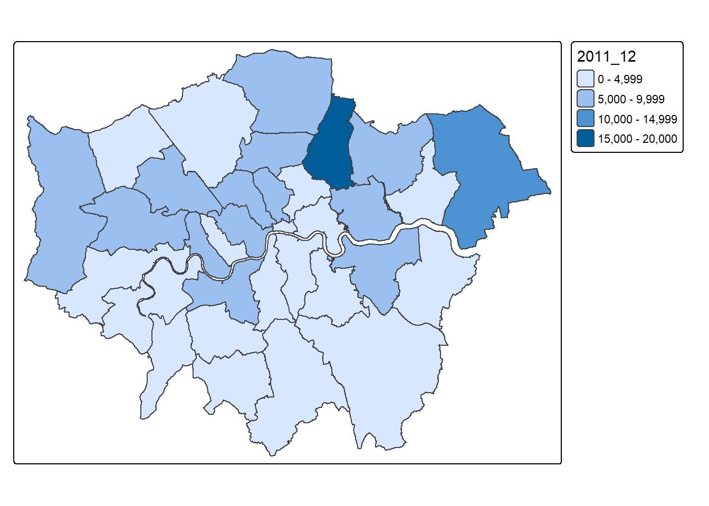
1.5.9 Export data
Finally write shape to a new GeoPackage (.gpkg) giving it the layer name of your choice:
shape%>% st_write(.,
"prac1_data/flytipping.gpkg",
layer = "london_boroughs_fly_tipping",
delete_dsn = TRUE
)## Deleting source `prac1_data/flytipping.gpkg' using driver `GPKG'
## Writing layer `london_boroughs_fly_tipping' to data source
## `prac1_data/flytipping.gpkg' using driver `GPKG'
## Writing 33 features with 8 fields and geometry type Multi Polygon.So here, we are saying the shape is the object we want to save, then we are saving this to a new GeoPacakge that will be created, with the layer name of london_boroughs_fly_tipping. I’ve set delete_layer to true so I could overwrite mine when I developed this practical. Changing it to false would generate an error message if you ever tried to re-run the code.
Let’s also add the originally .csv so someone could repliacte this analysis (they’d also need the original shapefile). This is a bit more complicated as we have to use the SQLite database package. Firstly, connect to the .gpkg we just made:
## Warning: package 'RSQLite' was built under R version 4.5.3Now examine what is in the .gpkg…you can see that i’ve already got my original_csv stored within the .gpkg as when i developed this practical i made sure it was working!
## [1] "gpkg_contents"
## [2] "gpkg_extensions"
## [3] "gpkg_geometry_columns"
## [4] "gpkg_ogr_contents"
## [5] "gpkg_spatial_ref_sys"
## [6] "gpkg_tile_matrix"
## [7] "gpkg_tile_matrix_set"
## [8] "london_boroughs_fly_tipping"
## [9] "rtree_london_boroughs_fly_tipping_geom"
## [10] "rtree_london_boroughs_fly_tipping_geom_node"
## [11] "rtree_london_boroughs_fly_tipping_geom_parent"
## [12] "rtree_london_boroughs_fly_tipping_geom_rowid"
## [13] "sqlite_sequence"Add your .csv and disconnect from the .gpkg:
Here overwrite let’s you well..overwrite the exisiting file…if this wasn’t specified as true you would get an error saying the file already existed if you tried to run this code again.
Within this practical we have explored the different types, formats and software used to store, analyse and manipulate spatial data. In reflecting upon this practical you should consider the (dis)advantages of each, where and when they might be appropriate and the overall practicality. Next week we will delve further into R and RStudio.
1.6 Feedback
Was anything that we explained unclear this week or was something really clear…let us know using the feedback form. It’s anonymous and we’ll use the responses to clear any issues up in the future / adapt the material.